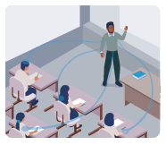
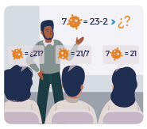
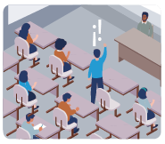

Algunas investigaciones dedicadas al análisis de las prácticas educativas de los docentes universitarios muestran que la mayoría de los profesores siguen un enfoque educativo ortodoxo y, por lo tanto, continúan empleando las clases
magistrales como la estrategia didáctica más frecuente en su proceso de enseñanza. El enfoque didáctico menos usado es el modelo integrador, en el cual se tienen en cuenta todos los aspectos que forman parte de la educación: el
educando, el profesor, los contenidos, los métodos y medios didácticos, la evaluación, los fines, los objetivos, los valores culturales, los fundamentos filosóficos y pedagógicos, así como el contexto.
Ejercicio: Estrategias para transformar la clase magistral
La clase magistral se reconoce como una estrategia didáctica del modelo pedagógico tradicional cuyo propósito es enseñar conocimientos específicos por medio de la lección repetida y así formar una persona ilustrada, obediente, un ser
perfectamente educado para vivir en el mundo, ejercer su profesión y ser respetuoso de las normas sociales impuestas(1).
Karl-Heinz y Schiefelbein describen cuatro principios didácticos(2) que orientan la clase magistral:
ToqueDe clic en cada uno de los números para ver la información.
La lección magistral sigue siendo la práctica pedagógica dominante en las clases de ciencias básicas en los centros universitarios españoles (3). Así mismo en nuestro medio, especialmente, cuando se tienen grupos numerosos de estudiantes
en un salón, sin embargo, no está indicada su desaparición pero es necesario rediseñar sus objetivos y contenidos, debiendo ser orientadora y discriminadora.
Autores como Friedrich Fröbel detallan una clasificación de ocho tipos de clases magistrales que se pueden adaptar a distintas áreas de conocimiento: el texto oral exquisito, la clase participativa, la clase de la solución de un problema, la de cambios de energía, la interpretación de textos, los debates, los grupos pequeños en clases grandes (simulaciones y juego de roles) y la clase multimedia, las cuales, exceptuando la primera, promueven la interacción.
A continuación, encontrará un listado con los tipos de clases magistrales propuestas junto a una breve descripción de estas y del rol que tiene el estudiante en ellas. También se dispone, en la columna de la derecha, una serie de descripciones del rol docente que deberá ordenar para que queden en frente a la clase correspondiente.
Para ordenar los elementos, haga clic sostenido sobre uno de los bloques de la derecha y arrastrelo arriba o abajo.
El texto oral exquisito

Auditor pasivo que observa y escucha un discurso que le puede inspirar, pero no vive el proceso de la creación del discurso.
El punto más importante no es el esquema con las ideas que son organizadas en el tablero o en algún medio visual, sino el proceso de creación del producto, ya que permite conocer los pre-saberes de los estudiantes.
Solución de un problema (demostraciones, pruebas, historietas)

La clase suele empezar con una pregunta, un problema, una paradoja, o un enigma, él debe hacer uso de su razonamiento crítico para dar respuesta a preguntas que surgen durante la sesión.
Cambios de energía: alternaciones entre mini discursos y discusiones
Similar a la del texto oral exquisito pero tiene en cuenta la capacidad de atención de los estudiantes, puesto que no se extiende por más de 20 minutos. Se presta a cualquier asignatura donde se alterne la teoría con la práctica, el modelo con los resultados o la hipótesis con la experimentación.
Interpretación de textos: exponer las destrezas analíticas
Utilizar textos verbales, usar gráficos, tablas e imágenes que se prestan para la interpretación y análisis. Los estudiantes también toman parte del análisis, especialmente cuando puedan darse diferentes interpretaciones.
Una vez los estudiantes hacen el análisis, pueden exponer las ideas, y tanto el profesor como los estudiantes pueden realizar su feedback.
Debates: la división de la clase en dos sin perder el control.

Aportar su perspectiva personal y posicionarse en el debate. Para este fin se recomienda que los estudiantes aborden el tema previamente.
Grupos pequeños en clases grandes: las simulaciones y el juego de roles.
Asumir un rol según la situación y el contexto que se le presente, y participar en la toma de postura.
Clase multimedia para estimular la afectividad y el interés
Se sugiere hacer una compilación de citas que los estudiantes deben leer, en voz alta, al empezar las sesiones, o una presentación audiovisual que compagine imágenes con las palabras de una canción o con un discurso verbal.
Una vez se haya hecho la presentación, los estudiantes estarán más dispuestos a discutir a expresar sus pensamientos.
-
Las actividades cognitivas de pensar, relacionar, analizar, sintetizar, las realiza el profesor y, por tanto, puede perder la atención de los estudiantes.
-
El profesor parte desde los conocimientos reales de los estudiantes. Los aportes de estos pueden ser clasificados, explicados, ilustrados, etc., tanto por el profesor como por los estudiantes.
-
La solución del problema requiere una demostración, un modelo, una narración o un repaso que se puede realizar entre los participantes (profesor y estudiantes).
-
El profesor empieza explicando los fundamentos de una cuestión, y este monólogo (máximo de 20 minutos) va seguido por un debate grupal (máximo de 15 minutos) sobre las implicaciones y efectos. Esta dinámica se alterna durante toda la sesión.
-
Se recomienda que el profesor utilice los textos claves de las asignaturas para hacer seguimiento, leer en voz alta en la clase y vocalizar sus interpretaciones.
-
Para que se dé el debate los estudiantes se dividen en dos grupos y cada parte defiende una perspectiva o posición.
-
Esta variedad conlleva cuatro pasos:
- El profesor establece el contexto y explica la posición o rol de cada grupo.
- Se divide en pequeños grupos y a cada uno se les asigna un rol.
- A cada grupo se les adjudica una tarea para llevar a cabo como, por ejemplo, proponer una posición o una toma de acción.
- Cada grupo aportará su propuesta a la clase y se discutirá su validez en comparación con las otras.
-
En estas clases se hace uso de medios multimedia ya que su objetivo es captar la atención y estimular las emociones de los estudiantes.